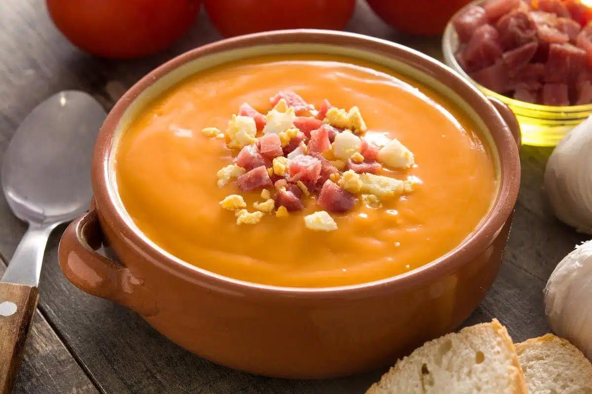
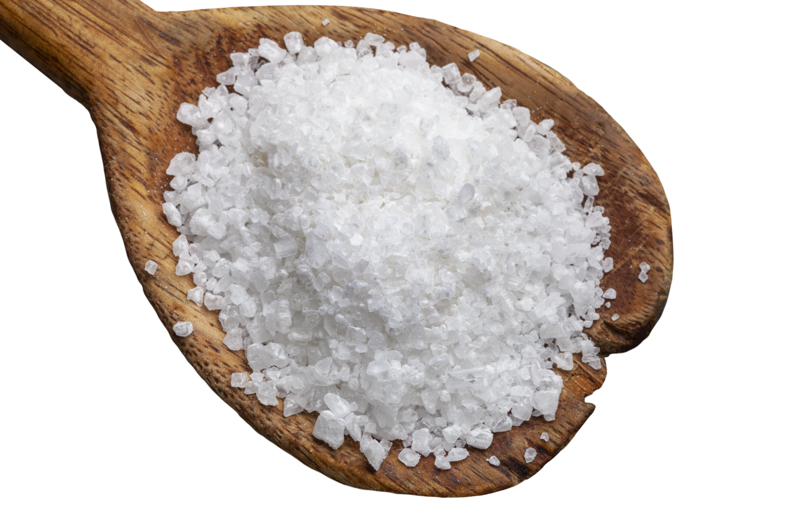
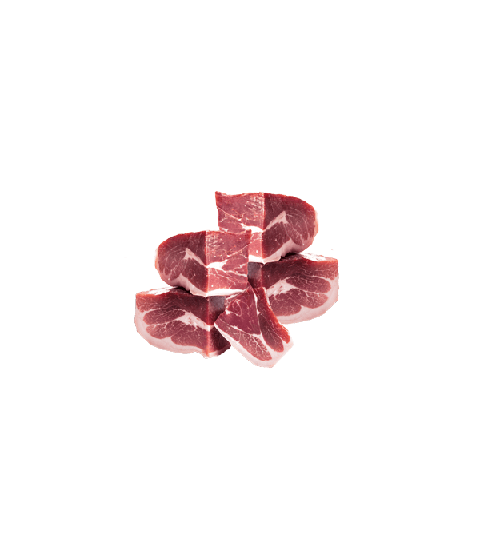
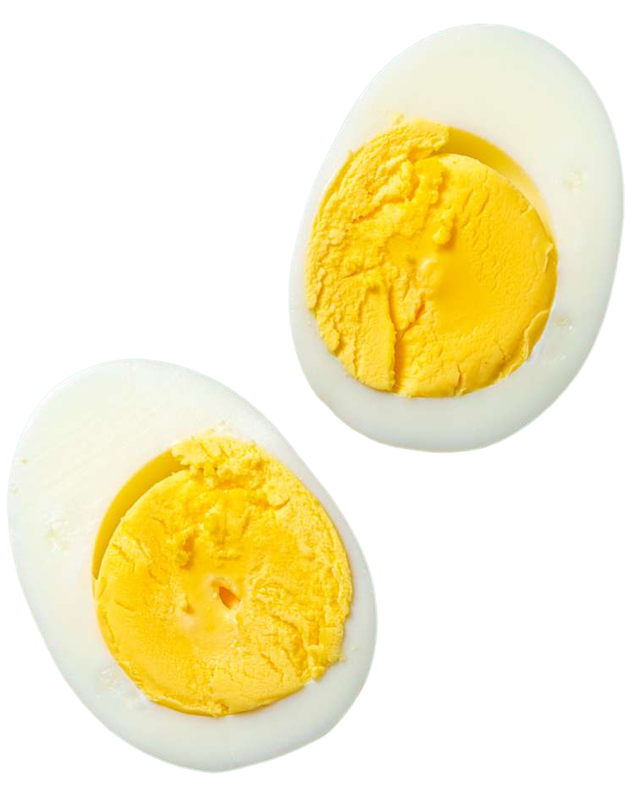
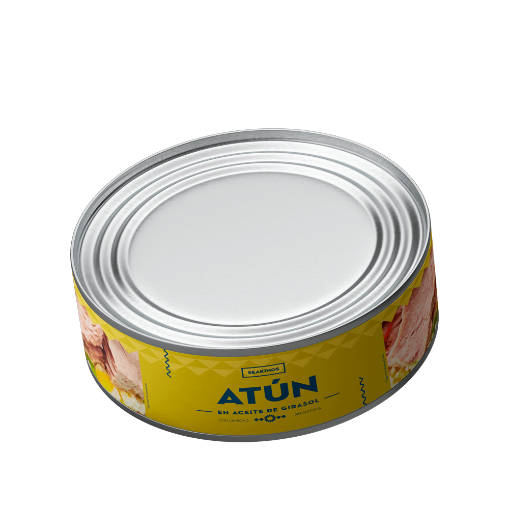

Porra antequerana

Cuando mi madre nos daba el pan, repartía amor. (Joël Robuchon)
Ingredientes

- 3 tomates (300gr)
- 1 diente de ajo (10gr)
- Pan (400gr)
- Aceite de oliva
- Sal
- Vinagre
Complementos:
- Taquitos de jamón
- Huevo cocido
- Patatas fritas
- Atún
Receta
- Se pone el pan en agua
- En el vaso de la batidora picamos el diente de ajo, añades sal aceite vinagre y tomates. Se pasa todo, y una vez pasado esto, le vas añadiendo pan poco a poco y lo sigues pasando.
- Lo cuelas para que se queden todos los restos y la piel de los tomates en el colador.
- Una vez hecho esto, se deja enfriar un poco en la nevera y se sirven los platos, acompañandolos de los complementos anteriormente citados.
Información nutricional
- Tomates
- Por 100 gramos:

- Calorías: 22 kcal.
- Proteinas: 1 gramo.
- Grasas totales: 0,11 gramos.
- El diente de ajo
- Por 100 gramos:

- Calorías: 114 Kcal.
- Carbohidratos: 23,4 gramos.
- Proteinas: 5,7 gramos.
- No tiene lípidos y destaca por su contenido en vitaminas C y B1 y B3
- Pan
- Por 100 gramos:

- Calorías: 210 Kcal.
- Carbohidratos: 52 gramos.
- Proteínas: 7,5 gramos.
- Aceite de oliva
- Por 100 gramos:
- Calorías: 884 Kcal.
Grasas:
- 14 gramos de ácidos grasos saturados.
- 10 gramos de ácidos grasos poliinsaturados.
- 73 gramos de ácidos grasos monoinsaturados.
- Sal
- Por 100 gramos:

- No tiene nada de calorías ni nada.
- Vinagre
- Por 100 gramos:
- Calorías: 18 Kcal.
- Carbohidratos: 0,04 gramos.
- No tiene nada de grasas.
- Taquitos de jamon
- Por 100 gramos:

- Calorías: 234 Kcal.
- Grasas: 10,6 gramos.
- Carbohidratos: 1 gramo.
- Proteínas: 33,7 gramos.
- Huevo cocido
- Por 100 gramos:

- Calorías: 154 Kcal.
- Grasas: 10,57 gramos.
- Carbohidratos: 1,12 gramos.
- Proteínas: 12,53 gramos.
- Patatas fritas
- Por 100 gramos:

- Calorías: 547 Kcal.
- Grasas: 37,47 gramos.
- Carbohidratos: 49,74 gramos.
- Proteínas: 6,56 gramos.
- Atún
- Por 100 gramos:

- Calorías: 187 Kcal.
- Grasas: 9,4 gramos.
- Carbohidratos: 0,5 gramos.
- Proteinas: 26 gramos.